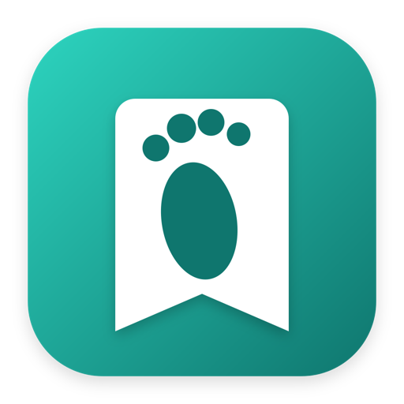

Alberto Lavecchia
Quattro app, un solo sviluppatore
Ognuna nasce per risolvere un problema concreto — territorio conquistato di corsa, tutto quello che guardi, tutto quello che accumuli in cantina, la vita di una società sportiva. Scegli quella che ti interessa.

Orma
Gioco GPS di territorio
Corri, cammina o fai trail running: ogni percorso reclama territorio reale sulla mappa. Sfida altri giocatori, difendi le tue celle, scala le classifiche.
Scopri Orma →MediaTracker
Watchlist multi-media
Serie, film, video YouTube e podcast in un unico posto. Valuta, commenta, tieni traccia di cosa hai visto — tutto resta sul tuo telefono.
Scopri MediaTracker →BoxTracker
Inventario scatole
Non aprire più tre scatole per trovare un cacciavite. Scatole, oggetti e luoghi organizzati, con etichette stampabili pronte da attaccare.
Scopri BoxTracker →Picco
App società sportiva
Squadre, rose, bacheca e Picco Card per la Pallavolo Lecco Alberto Picco. Sviluppata su commissione della società, non un'app personale.
Scopri Picco →